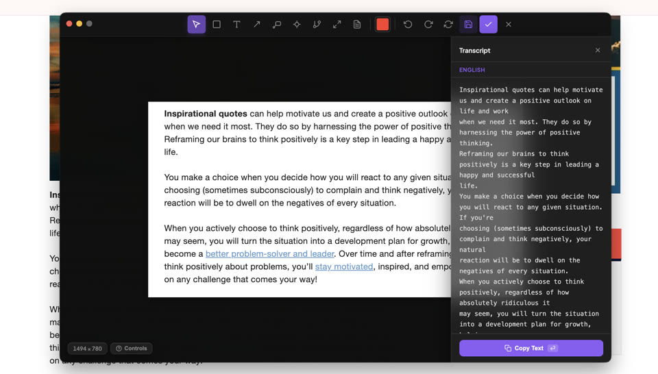

Optional Features & Add-ons
AI-powered capabilities that can be enabled in Snip. Object segmentation, upscaling, transcription, animation, and intelligent organization — all running locally on your Mac.
Your screenshots,
organized by AI.
A local vision LLM runs entirely on your Mac. No data leaves your machine.

Auto-Tagging
AI generates relevant tags for every screenshot — "IRS", "tax form", "social media", "code architecture" — making them instantly discoverable through the tag cloud.
Auto-Categorize
Screenshots are sorted into folders: code, chat, web, design, documents, terminal, and more. Create custom categories too.
Smart Naming
No more "Screenshot 2024-01-15 at 3.45.23 PM". Every snip gets a descriptive name like "api-endpoint-response-fix".
Semantic Search
384-dimensional embeddings make every screenshot searchable by meaning, not just filename. Powered by Transformers.js, all local.
All AI processing happens on your Mac using Ollama and Metal GPU acceleration. Zero data sent to the cloud. No API keys needed for core features.
Tag what you see.
Instantly.
Use AI segmentation to select any object, then add a labeled tag with a leader line — perfect for annotating UI components, diagrams, or anything on screen.
Enhance resolution.
On device.
Enhance any screenshot with AI super-resolution. Runs entirely on your Mac.
Extract text.
Instantly.
One-click OCR powered by macOS Vision (macOS only). Copy any text from any screenshot.

Bring your screenshots
to life.
Segment any object, pick an AI-generated motion preset, and turn it into an animated GIF in seconds. Powered by fal.ai — bring your own API key.
Animate uses fal.ai for AI-powered animation generation. To enable it:
- Get a free API key at fal.ai/dashboard/keys
- Open Snip Settings → Animation
- Paste your key and hit Save